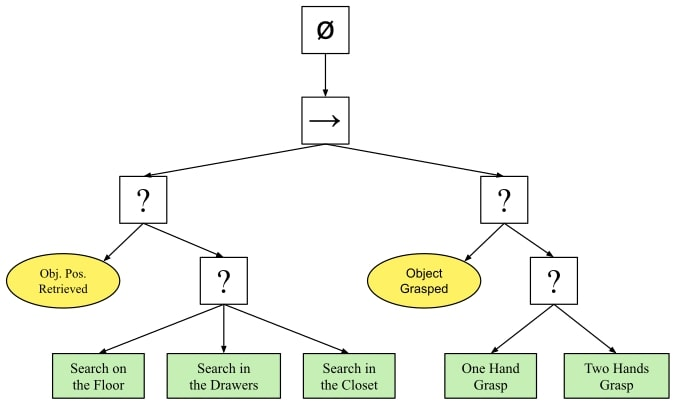
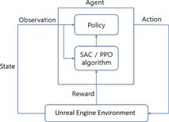
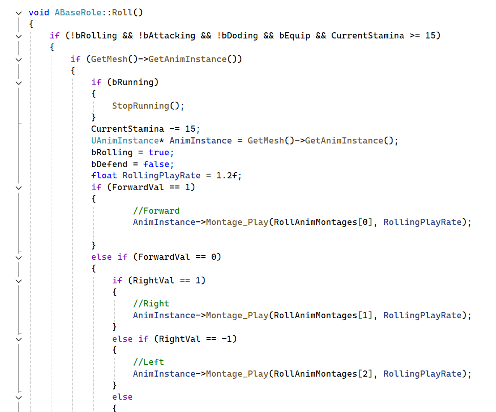
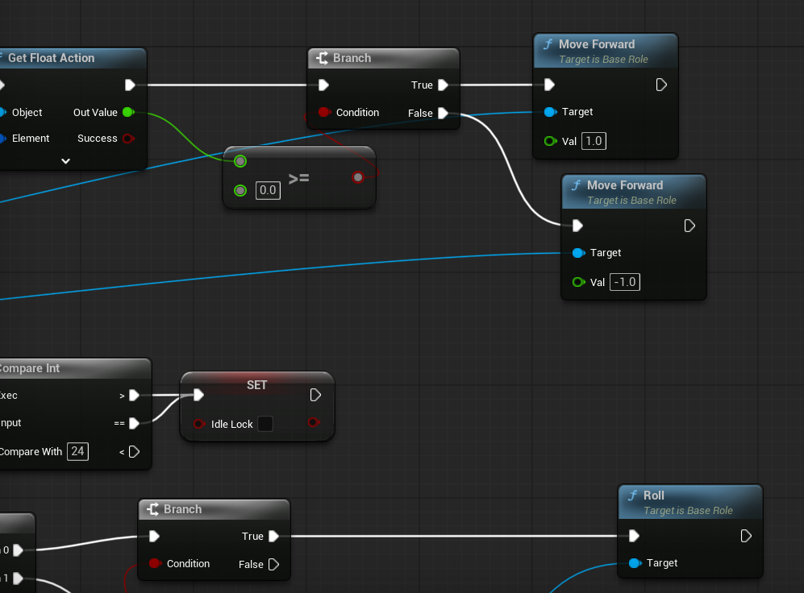
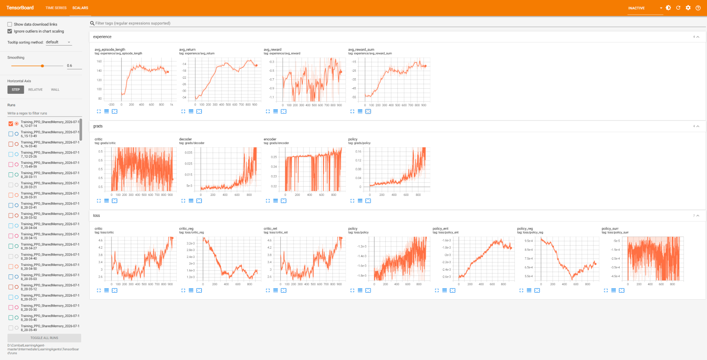
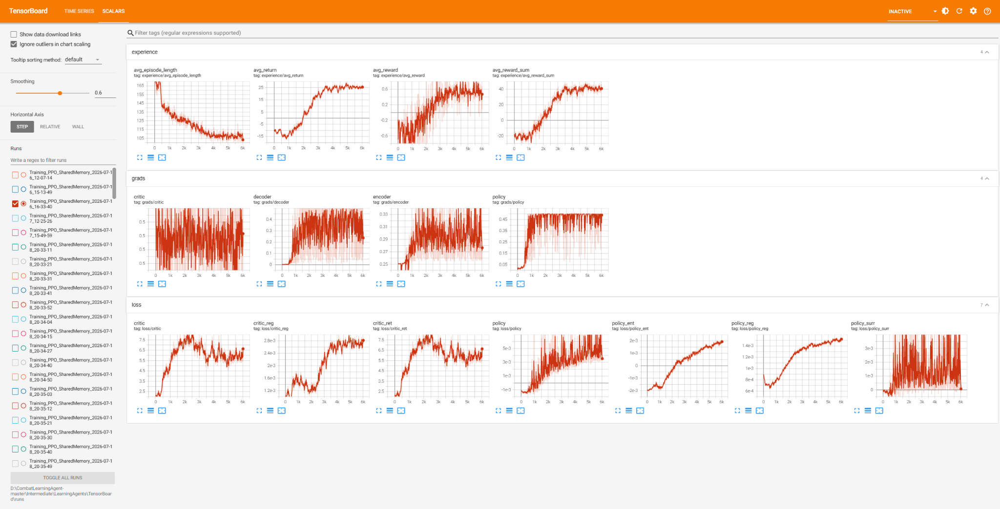

McGill Undergraduate Research Showcase
Combat Learning Agent
Reinforcement Learning for Real-Time Combat in Unreal Engine 5
School of Computer Science, McGill University
Overview
This website documents a combat-learning prototype developed for the McGill Undergraduate Research Showcase. The project investigates whether a reinforcement learning agent can learn effective real-time melee combat inside Unreal Engine 5 while interacting with the same movement, attack, defense, and gameplay systems available to a human-controlled character.
The player-side agent was trained with Proximal Policy Optimization through Unreal Engine's Learning Agents framework. Its opponent was a traditional rule-based boss implemented with a behavior tree and C++. Observations described the current combat state, policy outputs were translated into gameplay actions, and rewards were generated from combat events and episode outcomes.
The version presented at the showcase was still an early prototype and had not yet produced a reliable winning policy. Development continued after the event through repeated changes to reward shaping, action timing, memory settings, and training stability. The final recorded evaluation contains 100 inference episodes: the trained agent won 98 and lost 2, corresponding to a 98% win rate against the rule-based boss.
System
Both characters operate through the same underlying combat mechanics. The boss selects behavior using a traditional Unreal Engine behavior tree. The learning agent receives a structured observation of the encounter and selects movement, attack, rotation, and defensive actions through a PPO policy.


Implementation
Combat actions were implemented in C++ and exposed to Blueprint. This provided the Learning Agents plugin with a small and explicit action interface while reusing the existing gameplay systems. The policy did not directly manipulate animation or combat state; it selected high-level commands that were executed through the same character functions used by the rest of the game.


Training
Training required substantially more iteration than the initial showcase version suggested. Shorter and unsuccessful runs often improved some metrics without producing a stable combat strategy. The longer final run shows a sustained increase in average return and reward sum together with a reduction in average episode length, indicating that the agent learned to finish encounters more successfully and more quickly.


Inference results
The final policy was evaluated over 100 recorded combat episodes. It won 98 encounters and lost 2. Across all episodes, the mean duration was 24.87 seconds and the median duration was 23.43 seconds. In winning episodes, the agent retained an average of 71.22 health, with a median of 70.
| Evaluation episodes | 100 |
|---|---|
| Agent wins | 98 |
| Boss wins | 2 |
| Agent win rate | 98% |
| Mean episode duration | 24.87 seconds |
| Median episode duration | 23.43 seconds |
| Mean remaining HP in wins | 71.22 |
Download the raw inference results (CSV)
Development notes
- Reward shaping strongly affected whether the policy learned useful combat or repetitive reward-seeking behavior.
- Short action intervals caused visually unstable movement and rapid switching between actions.
- Memory did not consistently improve the policy and sometimes reduced active engagement.
- Several unsuccessful configurations produced numerical instability, attack spamming, or overly defensive behavior.
- The final result was obtained through post-showcase development rather than during the original event.
Timeline
Showcase prototype: combat environment, behavior-tree opponent, Learning Agents integration, and initial training attempts.
Post-showcase development: reward redesign, timing adjustments, stability fixes, longer training, and the 100-episode inference evaluation reported above.
Future work: transferring the approach into a commercial game will be treated as a separate research project with a new repository, team, and experimental protocol.
Showcase team
Eric Xu Cui — project lead, primary development, reinforcement learning integration, training, evaluation, and website.
Matthew Tan Yin Sian — showcase project contributor.
Jason Shen — showcase project contributor.
Names are listed in order of contribution.
References and resources
- Epic Games, Unreal Engine Learning Agents.
- Reinforcement Learning Basics.
- Additional related work and formal citations will be added as the project documentation is revised.